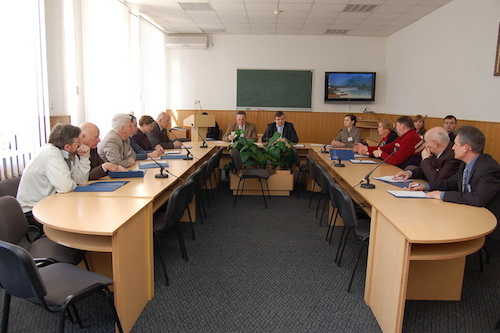

КАФЕДРА СОЦІОЛОГІЇ УПРАВЛІННЯ
завідувач кафедри
д.соц.н., проф.
Валерій Васильович
БУРЕГА
Кафедру соціології управління створено в грудні 2004 року на базі кафедри соціально-гуманітарних дисциплін, яка була однією з найстаріших у Донецькому державному університеті управління.
Завданням кафедри є підготовка спеціалістів у сфері соціології, а також соціально-гуманітарна підготовка майбутніх фахівців з ууправління, економіки та права.
Цим займається кваліфікований професорсько-викладацький колектив, у складі якого п’ять професорів та шістнадцять доцентів. Очолює його професор, доктор соціологічних наук, заслужений працівник освіти України В.В. Бурега.
Серед співробітників кафедри професор, доктор соціологічних наук Н.М. Лисиця, професор, доктор філософських наук Я.І. Пасько, професор, доктор соціологічних наук Б.В. Слющинський.
На кафедрі працюють кандидати наук з соціології, історії, державного управління, політології, економіки, психології. Завдяки зусиллям викладачів кафедри навчальний процес забезпечено власною навчально-методичною літературою.
Кафедра успішно отримала ліцензію та пройшла акредитацію з надання вищої освіти на освітньо-кваліфікаційних рівнях «бакалавр», «спеціаліст» та «магістр» і тепер у ДонДУУ випускають кваліфікованих бакалаврів, спеціалістів та магістрів-соціологів. Крім того, на базі кафедри соціології управління з 2012 року здійснюється набір абітурієнтів на нову спеціальність — «Соціальна робота».
Традиційним стало проведення Міжнародної наукової конференції «Сучасні суспільні проблеми у вимірі соціології управління», яка відбулася у 2011 році в сьомий раз. Кожного року розширюється географія учасників, зростає кількісно та змінюється якісно їх склад. Крім того, кафедрою соціології управління та Російсько-Баварським дослідницьким центром ім. О.О.Зинов«єва при Московському гуманітарному університеті започатковано проведення Міжнародної наукової конференції “Зинов'євські студіі” в ДонДУУ, яка проходить раз в два роки.
Колектив кафедри активно реалізує свій науковий потенціал. Щороку видаються монографії, підручники, навчальні та навчально-методичні посібники, статті з актуальних проблем соціології управління.
На постійній основі при кафедрі соціології управління діє аспірантура та видається науковий збірник, який є фаховим з соціології. З березня 2010 року в Донецькому державному університеті управління почала діяти спеціалізована вчена рада К 11.128.03 з правом прийняття до розгляду та проведення захистів дисертацій на здобуття наукового ступеня кандидата соціологічних наук за спеціальностями: 22.00.01 – Теорія та історія соціології; 22.00.04 – Спеціальні та галузеві соціології. Першою у спеціалізованій раді захистила кандидатську дисертацію викладач кафедри соціології управління Н.С. Скок
У цілому кожного року викладачами та аспірантами кафедри соціології управління захищаються дві-три роботи з соціології та державного управління. За кількістю викладачів, які мають науковий ступінь, кафедра займає провідне місце в ДонДУУ.
До структури кафедри входить соціологічна науково-дослідна лабораторія (завідувач – к.держ.упр., доцент Н.Ф. Селютіна), яка не лише надає можливість студентам практично оволодівати секретами професії, але й проводить за їх безпосередньої участі конкретні дослідження з актуальної тематики. Соціологічна лабораторія кафедри брала участь у низці дослідницьких проектів. Зокрема, варто відзначити найбільш актуальні з них, а саме: проект “Стан та перспективи малого бізнесу в м. Донецьку”, “Місто як соціокультурний простір”, “Оцінка населенням м. Донецька якості адміністративних послуг, що надаються органами виконавчої влади та органами місцевого самоврядування”, “Ставлення мешканців м. Донецька до корупції в органах влади” тощо.

Кафедра соціології управління розширює міжнародні зв'язки. В 2011-2012 навчальному році кафедрою спільно з Міжнародним Вишеградським Фондом відкрито нову дисципліну для магістрів-соціологів — “Вишеград і Україна: результати міжнародних порівняльних соціологічних досліджень”. Разом із викладачами кафедри дисципліну викладають професори з Польщі (Кшиштоф Загорскі) та Угорщини (Пал Тамаш).
Важливим центром співробітництва українських вчених є Соціологічна Асоціація України. Кафедра соціології управління ДонДУУ – кадрова та організаційна основа Донецького відділення САУ. Наші представники входять до складу республіканського правління САУ.
Співробітниками кафедри успішно організуються та проводяться Всеукраїнські конкурси студентських наукових робіт з державного управління (соціологія управління, філософія управління) та їх підсумкові конференції. Незмінним секретарем галузевої конкурсної комісії є к.і.н., доцент В.Ж. Попов.
Крім того, на кафедрі щороку проходить студентська наукова конференція “Сучасні суспільні проблеми у вимірі соціології та політології”, в якій, крім студентів-соціологів, беруть участь студенти інших спеціальностей ДонДУУ та вищих навчальних закладів Донецька. А в квітні 2012 року кафедра соціології управління провела І Всеукраїнську науково-практичну конференцію молодих вчених та студентів “Теоретичні, методичні та практичні проблеми соціології управління”.
Кожного року на цих конкурсах та конференціях наші студенти займають призові місця та отримують грамоти. Особливо популярними серед студентів спеціальності “Соціологія” є конкурси есе з різної тематики, проведення яких започатковано керівником студентського наукового товариства кафедри соціології управління к.і.н., доцентом О.В. Біклою.
Яскравим свідченням визнання авторитету кафедри соціології управління є проведення на її основі у квітні 2012 року Всеукраїнської студентської олімпіади із спеціальності “Соціологія”. За її результатами студентка кафедри Ю. Білоног зайняла друге місце серед найкращіх студентів-соціологів із всієї України.
Серед студентів та викладачів кафедри багато творчих та талановитих особистостей, про що свідчить участь та неодноразові перемоги в різних культурно-масових та спортивних заходах — у “Дебюті першокурсника”, Днях факультету права та соціального управління, “Зірковому університеті”, спартакіадах на Кубок ректора тощо. Серед постійних учасників таких заходів відзначимо к.і.н., доцента В.Ж. Попова, к.соц.н., доцента Т.В. Єрескову, к.і.н., старшого викладача Т.Ю. Кандубу, співробітника соціологічної науково-дослідної лабораторії М. Передерій та, звичайно, студентів-соціологів.
Студенти спеціальності “Соціологія” мають активну життєву позицію, приймаючи участь у різноманітних заходах на міському та регіональному рівнях.
Всі наші досягнення своєчасно знаходять відображення на сторінках “Літопису кафедри”, який, за підсумками конкурсу, визнано одним з найкращих в університеті. Оформленням “Літопису кафедри” займається старший викладач, к.і.н. М.М. Чаплик
Таким чином, педагогічний, науковий та студентський потенціал, який має кафедра, надихає впевненість у її майбутні перспективи.
Соціологічна наука дає можливість не лише зрозуміти складний світ соціальних явищ, а й пропонує шляхи для його вдосконалення. Це єдина наука, яка вивчає суспільство в цілому. Отже, важко знайти сферу діяльності, де було б неможливо застосувати отримані соціологом знання. Тому кваліфікований соціолог ніколи не залишиться без роботи.
Наші випускники можуть працювати:
отримавши диплом за спеціальністю “Соціологія”:
— у державних та комерційних установах, здійснюючи управління персоналом та роботу з кадрами;
— маркетингових компаніях, займаючись вивченням ринку збуту товарів;
— у штаб-квартирах політичних партій як спеціалісти з планування та організації виборчих та політичних кампаній;
— засобах масової інформації;
— рекламних компаніях;
— іміджевих та ПР-агенствах;
— соціальних службах;
— страхових, кадрових та ріелторських компаніях;
— сімейних консультаціях;
— органах державного управління всіх рівнів, прогнозуючи суспільні явища та процеси;
— аналітичних центрах та консалтингових компаніях.
отримавши диплом за спеціальністю “Соціальна робота”:
— у регіональних та місцевих органах державного управління у якості фахівців зі зміни законодавства та перерозподілу соціальних ресурсів;
— на підприємствах, установах та організаціях фахівцями з соціального захисту робітників у якості менеджерів соціальної сфери;
— у державних, громадських територіальних центрах та фондах соціальної допомоги;
— центрах зайнятості населення;
— відділах соціально-правової допомоги;
— територіальних відділах соціального захисту населення;
— службах психолого-педагогічної реабілітації та підтримки соціально незахищених верств населення;
— міграційних службах;
— комітетах та управліннях з молодіжної політики, охорони праці та навколишнього середовища;
— фондах соціального страхування;
— у реабілітаційних центрах, центрах соціального обслуговування населення, інтернатах.
Запрошуємо вас до дружньої команди соціологів!
margin-bottom:.0001pt; text-align: justify; text-justify: inter-ideograph; line-height: normal
Завантажити вкладення: ПЕРША ВСЕУКРАЇНСЬКА КОНФЕРЕНЦІЯ МОЛОДИХ ВЧЕНИХ З СОЦІОЛОГІЇ УПРАВЛІННЯ ДРУЖБОЮ МИ СИЛЬНІ VIII МІЖНАРОДНА НАУКОВА КОНФЕРЕНЦІЯ СОЦІОЛОГІЯ — ПРОФЕСІЯ МАЙБУТНЬОГО ВСЕУКРАЇНСЬКА СТУДЕНТСЬКА ОЛІМПІАДА З СОЦІОЛОГІЇ АЛЬОХІНСЬКІ ЧИТАННЯ ЗУСТРІЧ З НОВИМ ПОКОЛІННЯМ

 Шестак Валентин Сергійович
Шестак Валентин Сергійович